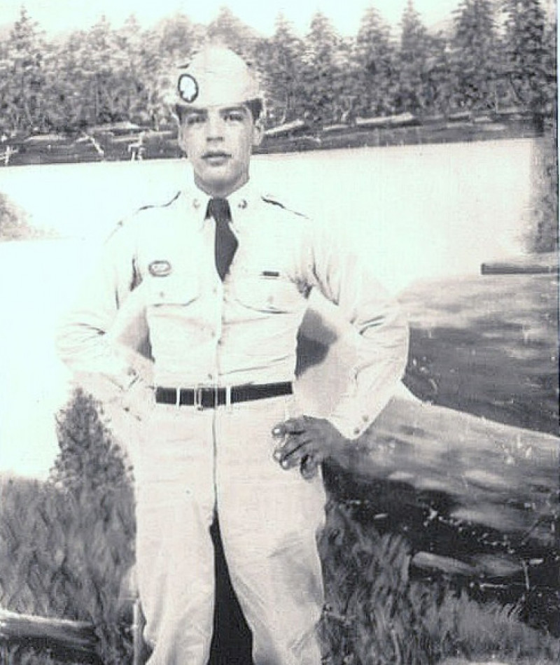

Joe R. Baldonado

Hello everyone, I hope you are doing well! I am glad to present another installment of Warrior Wednesday, remembering the heroic life and death of Corporal Joe Baldonado. When reading the following citation from the official Medal of Honor website, keep in mind that Cpl. Baldonado was only 19 years old. He was born on August 28, 1930 in Colorado. While serving with the U.S. Army in 3rd Squad, 2nd Platoon, Company B, 187th Airborne Infantry Regiment, Cpl. Baldonado displayed remarkable and selfless actions near Kangdong, Korea. The following citation is accredited to the Congressional Medal of Honor Society official website:
Corporal Joe R. Baldonado distinguished himself by acts of gallantry and intrepidity above and beyond the call of duty while serving as an acting machine gunner in 3d Squad, 2d Platoon, Company B, 187th Airborne Infantry Regiment during combat operations against an armed enemy in Kangdong, Korea on November 25, 1950. On that morning, the enemy launched a strong attack in an effort to seize the hill occupied by Corporal Baldonado and his company. The platoon had expended most of its ammunition in repelling the enemy attack and the platoon leader decided to commit his 3d Squad, with its supply of ammunition, in the defensive action. Since there was no time to dig in because of the proximity of the enemy, who had advanced to within twenty-five yards of the platoon position, Corporal Baldonado emplaced his weapon in an exposed position and delivered a withering stream of fire on the advancing enemy, causing them to fall back in disorder. The enemy then concentrated all their fire on Corporal Baldonado’s gun and attempted to knock it out by rushing the position in small groups and hurling hand grenades. Several times, grenades exploded extremely close to Corporal Baldonado but failed to interrupt his continuous firing. The hostile troops made repeated attempts to storm his position and were driven back each time with appalling casualties. The enemy finally withdrew after making a final assault on Corporal Baldonado’s position during which a grenade landed near his gun, killing him instantly. Corporal Baldonado’s extraordinary heroism and selflessness at the cost of his own life, above and beyond the call of duty, are in keeping with the highest traditions of military service and reflect great credit upon himself, his unit and the United States Army. Cpl. Baldonado was posthumously awarded the Medal of Honor by President Barack Obama on March 18. 2014, with the award being presented to Cpl. Baldonado’s brother. Though his remains were not able to be recovered, there is a memorial to him at the Honolulu Memorial Cemetery in Hawaii, as well as a memorial to his name at Arlington National Cemetery in Virginia.
Congressional Medal of Honor Society, “Stories of Sacrifice,” accessed October 15, 2024,